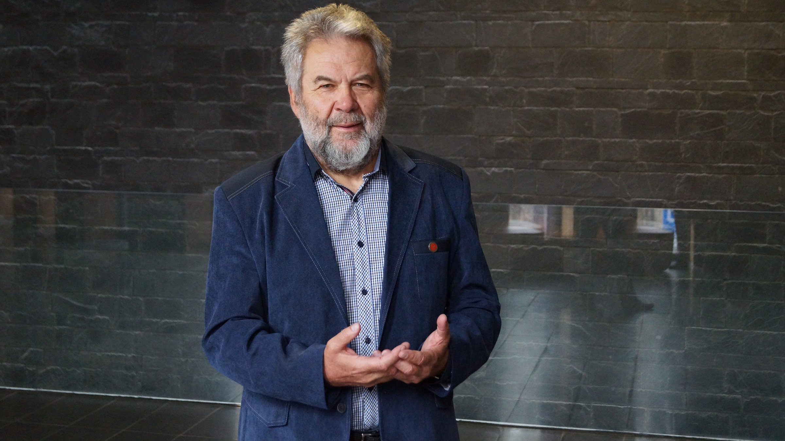
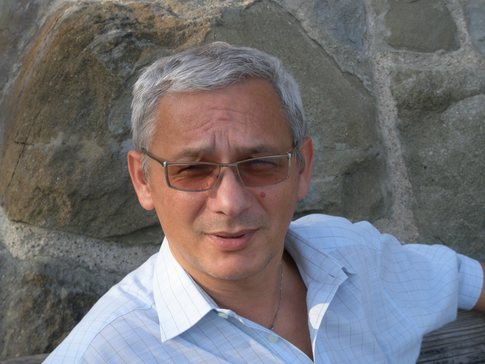
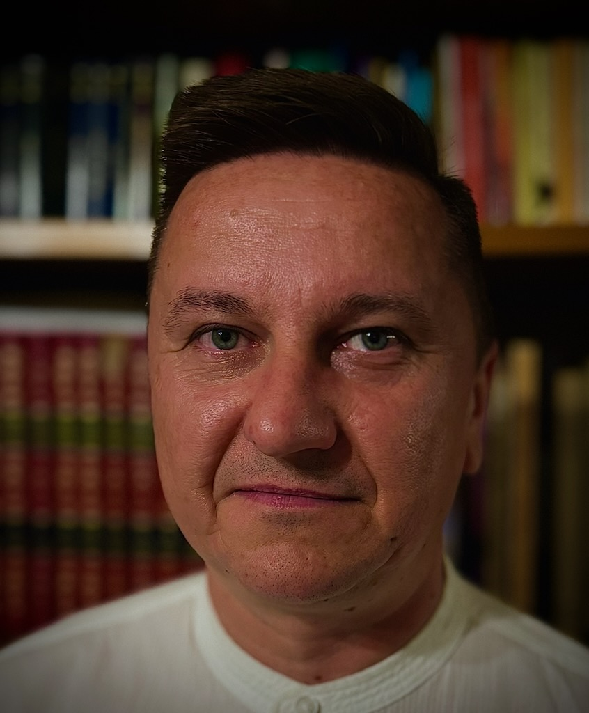

Mistrzowie
| prof. dr hab. Agnieszka Cybal-Michalska Uniwersytet im. Adama Mickiewicza w Poznaniu |
|
| prof. dr hab. Stefan M. Kwiatkowski Akademia Pedagogiki Specjalnej im. Marii Grzegorzewskiej |
|
|  | prof. dr hab. Jerzy Nikitorowicz Uniwersytet w Białymstoku |
| prof. dr hab. Mirosław J. Szymański Akademia Pedagogiki Specjalnej im. Marii Grzegorzewskiej |
|
|  | prof. dr hab. Bogusław Śliwerski Uniwersytet Łódzki |
| prof. dr hab. Marzenna Zaorska Uniwersytet Warmińsko-Mazurski w Olsztynie |
Prelegenci
| Prof. dr hab. Jan Fazlagić | Uniwersytet Ekonomiczny w Poznaniu | |
| dr hab. Ryszard Pęczkowski, prof. Uniwersytetu Rzeszowskiego | ||
| dr Marzanna Moćko – Dyrektor Zespołu Szkoły Podstawowej nr 2 i Przedszkola w Zagnańsku | ||
| dr Danuta Romaniuk - Dyrektor Centrum Kształcenia Nauczycieli Języków Obcych i Edukacji Europejskiej Uniwersytetu Warszawskiego | Bartosz Prońko – Dyrektor Wydziału Edukacji i Profilaktyki Zdrowotnej Urzędu Miasta Kielce | |
| Michał Leja – Nauczyciel matematyki, wicedyrektor Zespołu Szkół nr 2 im. Tadeusza Rejtana w Rzeszowie | ||
|  | Paweł Stawarz – Prezes Stowarzyszenia Studentów i Absolwentów Uniwersytetu Rzeszowskiego | |
| Andżelika Pawłowska - studentka V roku Pedagogiki przedszkolnej i wczesnoszkolnej Uniwersytetu Rzeszowskiego |